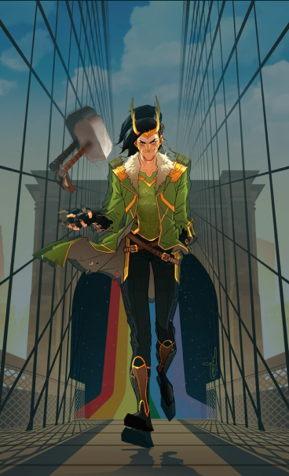

Loki nasceu em Jotunheim como o filho do rei dos Gigantes de Gelo, Laufey. Pequeno e fraco para um Gigante de Gelo, Loki foi abandonado por seu pai em um templo, onde era esperado que ele morresse. Em 965 a.C., pouco depois da guerra entre os Gigantes e os asgardianos, Loki foi encontrado pelo Rei Odin.
Habilidades
- Manipulação De Energia
- Projeções Astrais
- Encantamentos
- Telecinese
- Longevidade De Deus
